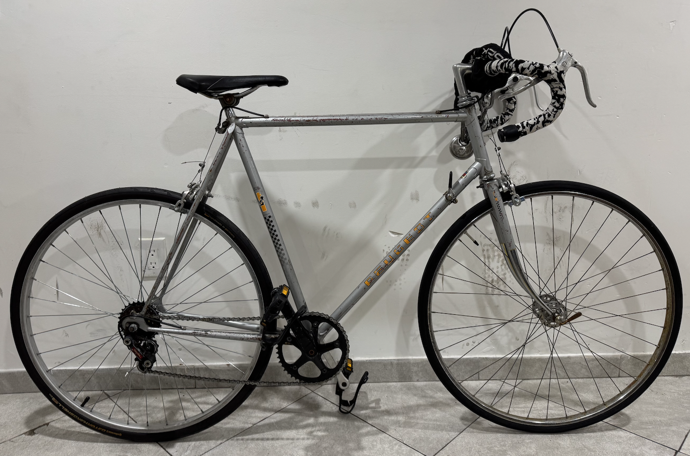
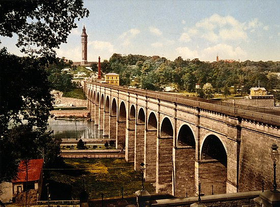

Last semester, I registered for a class which took place at Fordham Lincoln Center, on the Upper West Side of Manhattan. I chose to bike from my apartment at Fordham's Bronx campus (Belmont). It's a distance of about 10 miles.
I met an old French guy in Brooklyn off of Facebook Marketplace who showed me an old Peugeot his son apparently didn't want. Per the recommendation of my calculus teacher, who I noticed biked from Harlem every day to class, I was looking for something with a low amount of gears, a steel frame, and low-cost:
We reached a deal of $125, inclusive of a heavy duty chain lock (since been stolen when I briefly left it unlocked by itself outside).
There are 5 speeds, operated by a vintage downtube shifter, a downward hand motion balancing act I came to enjoy as opposed to the modern handle attached shifters. The highest gear does not work, and I often came to class with gritty hands from putting the chain back on.
I did not use clip ins, though that's my next upgrade.
I eventually replaced the steel annoying chain with a Kryptonite u-lock that I mounted to the frame.
IMO in NYC you shouldn't buy a nice bike. Go for a raw old one that gets the job done. Or be a Green Way sweat with a 2k Bianchi.
On average, I made it to the UWS in about 48 minutes. The same for getting back.
Getting out of The Bronx, and into Harlem, is an adrenaline rush. There are parts that felt like being at the whim of a drunk tuk-tuk driver in India. There are certain parts of The Bronx where the rules of the road no longer apply. Double-parked cars, mopeds and delivery drivers swooping in and out, all in one swelling road. The juxtaposition of this and, say, below Houston street is striking. Yet, I would say the flow you can attain in these more congested areas is where so much thrill and satisfaction happens. As the cars grid-lock, you get to pass through like water.
Reaching the High Bridge is the main slice of heaven within the route, connecting The Bronx to Washington Heights, Manhattan. An old water tower sits perfectly middle-aligned in your vision as you bike across the bridge. The High Bridge is the oldest bridge in NYC, opened in 1848 as part of an aqueduct system.
The High Bridge, NYC's oldest standing bridge, originally built in 1848 as part of the Croton Aqueduct.
After this, I reached the Greenway, the long path along the Hudson with no cars. This was nice until they closed the entire stretch I was using for construction. I detoured to Riverside drive, one of the more beautiful roads with adjacently nice buildings in NYC.
Adrenaline rushes imply close calls. Often these weren't potentially deadly or even bone breakers, but more of a potential squeeze between a bus and car. I don't know what the outcome of those would be.
Taxis do not seem to like bikers very much and we had a complicated relationship.
Biking in NYC allows you to see stuff that you can't on the subway or in a car, simple as that. I'm looking forward to this spring where I can go bike just for the sake of biking.
I started to assemble and codify the patchwork of the streets, mentally, by taking things from different angles and directions on the bike. Biking in NYC increases your NYC literacy. I feel lucky to be living in a place where I can literally bike the whole thing in a day. What a thrill.